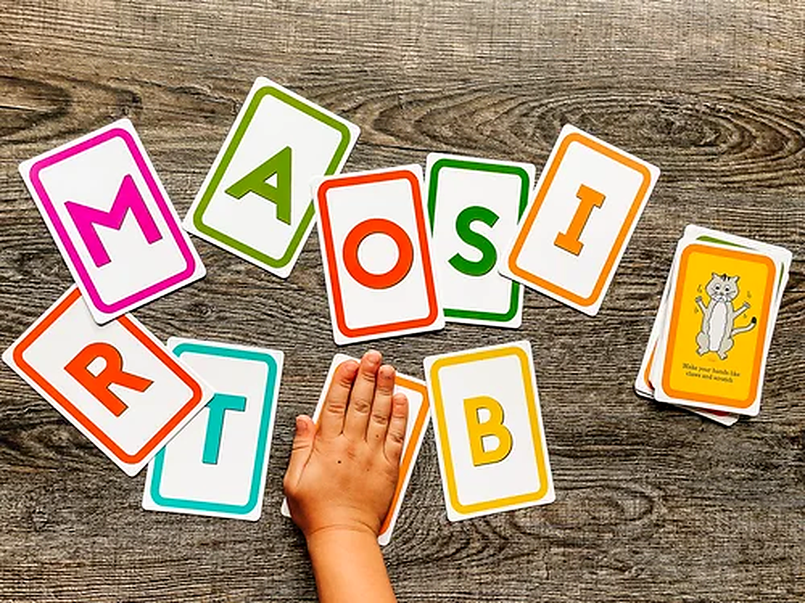
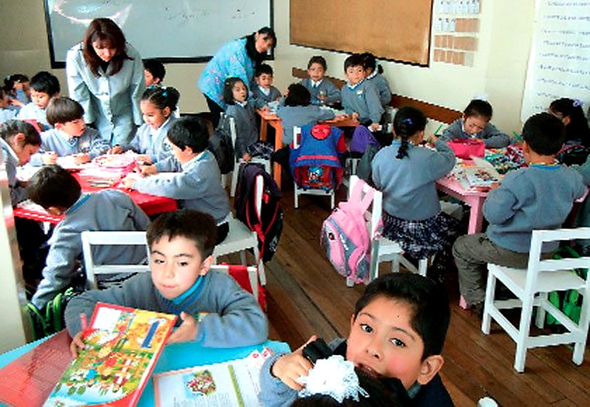
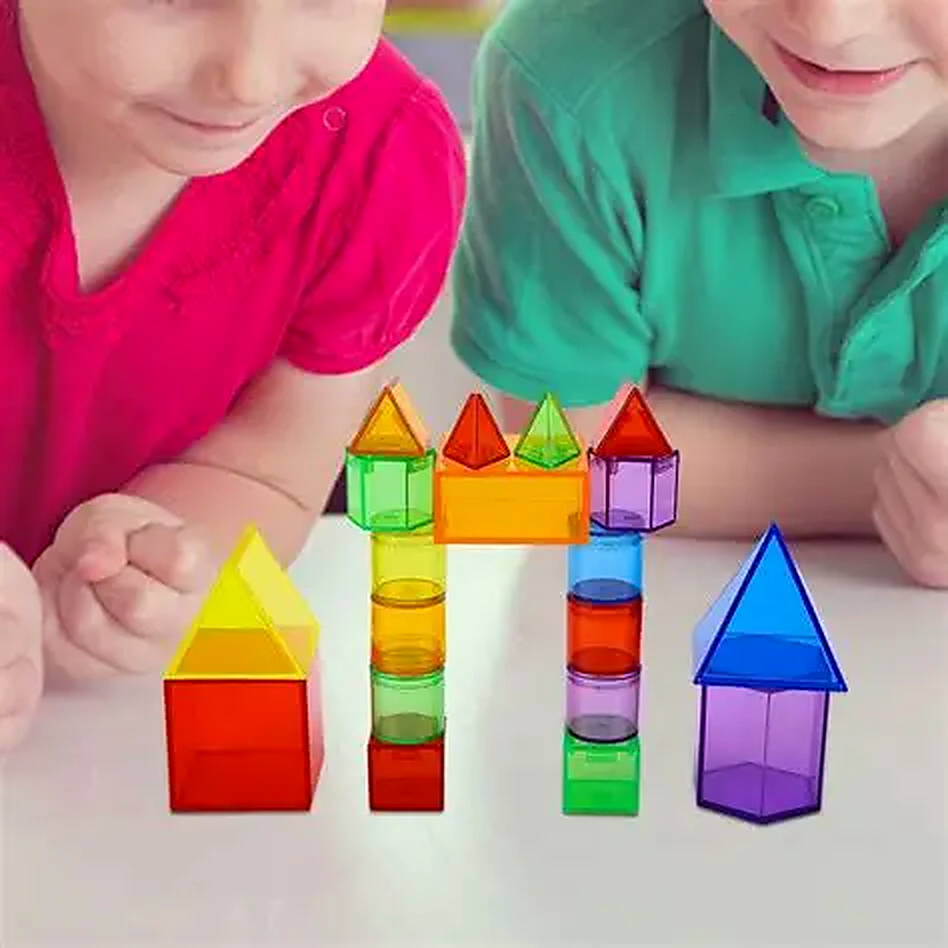
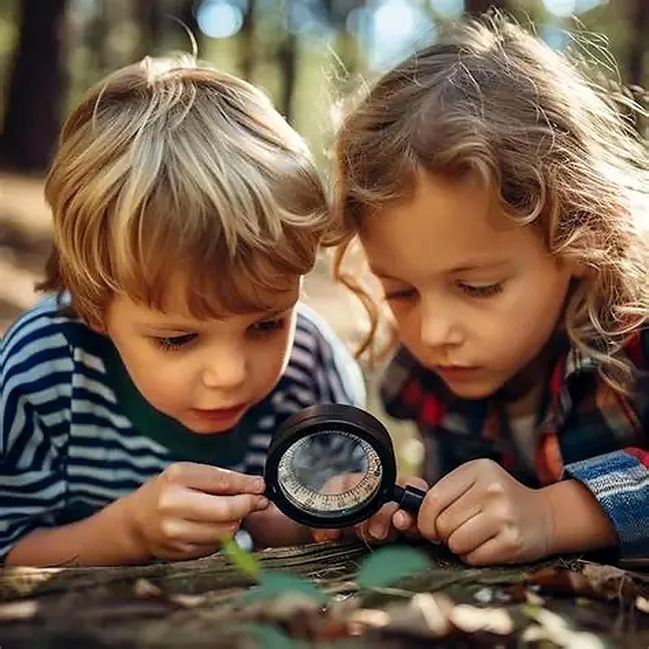
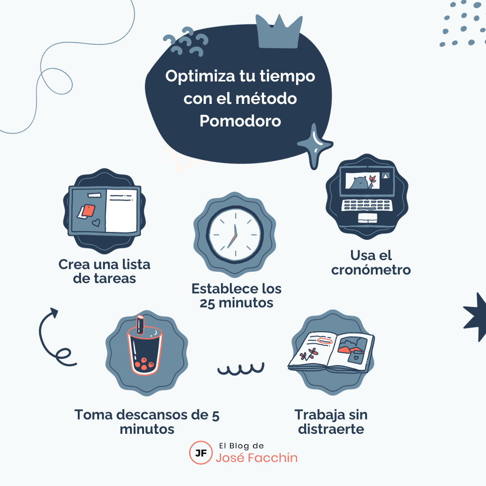
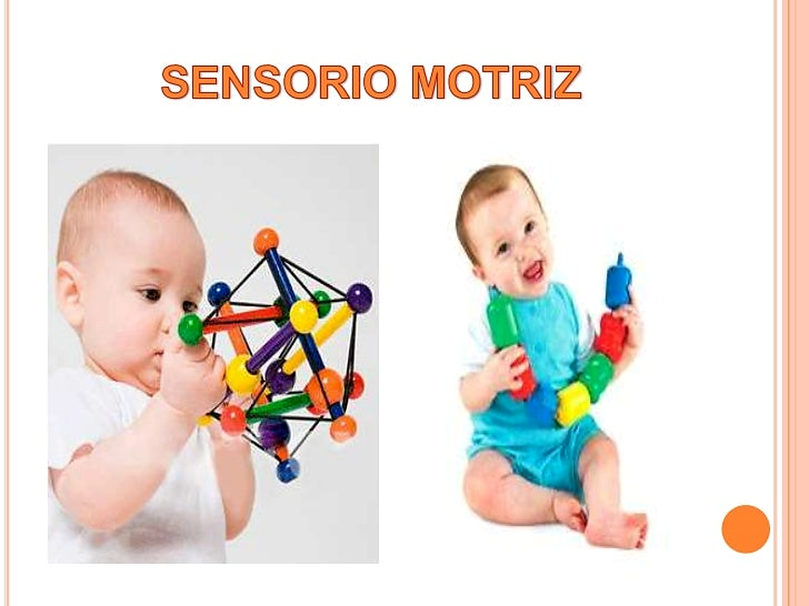

TÉCNICA 01
Juegos con flashcards en movimiento: Convierte el repaso de colores, números, letras o animales en una carrera de obstáculos donde deban saltar o correr hacia la tarjeta correcta


Explora las actividades y fotografías de este nivel.



Movimiento constante: Combina el aprendizaje con pausas activas, canciones y baile (como "Soy una taza" o juegos de imitación).

